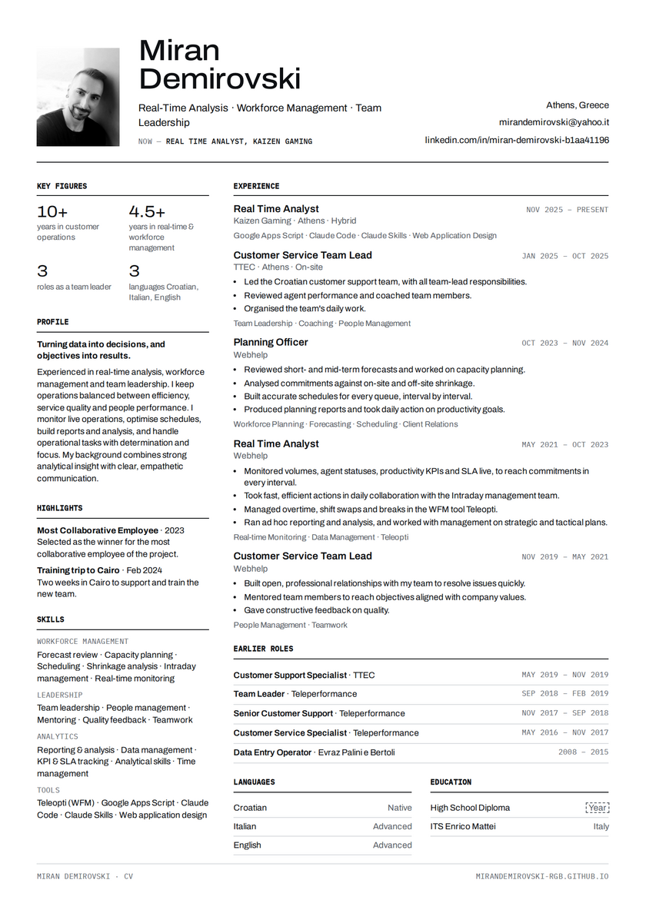

All five pages show the same CV. Only the style and the motion change. Watch each one build itself, then open it on your phone and on a computer.
Watch the videos below. Each one shows the page building, then a slow scroll to the end.
Open the live pages. Use the small bar at the bottom to move between styles or replay the build.
Tell me your favourite number. You can also mix, for example "4, with the photo from 2".
"Best for" is my suggestion. It is your choice.
| Style | Mood | Page | The moment people remember | Motion | Best for |
|---|
Every style has a "Download PDF" button. It gives this A4 page, built from the same content.

What I checked, how I got the numbers, and what I still need from you.